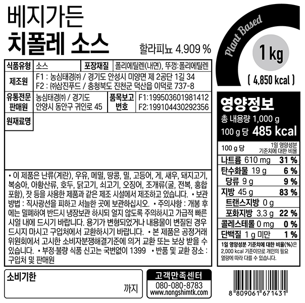

채종유C(CANOLA)(채종유:국내산), 토마토케찹(하인즈)(스
페인산/토마토,식초,설탕,정제소금,계피추출물), 현미식초[주요(포도당,주요발효영양원),현미당화농축액(현미:외국산),주정,물엿,올리고당], 정제수, 고과당, 할라피뇨(렐리쉬)[염장고추(중국산)], 이집트콩분말, 정백당, 정제염(가는염, 지대), 잔탄검, 퀼라야추출물, 칠리맛풍미분TK, 겨자분#601, 변성전분, 스모크향, DL-메티오닌, 향신료올레오레진류
표시사항 확인
AI 표시사항 저장 완료
변경 사항이 성공적으로 저장되었습니다.
확인